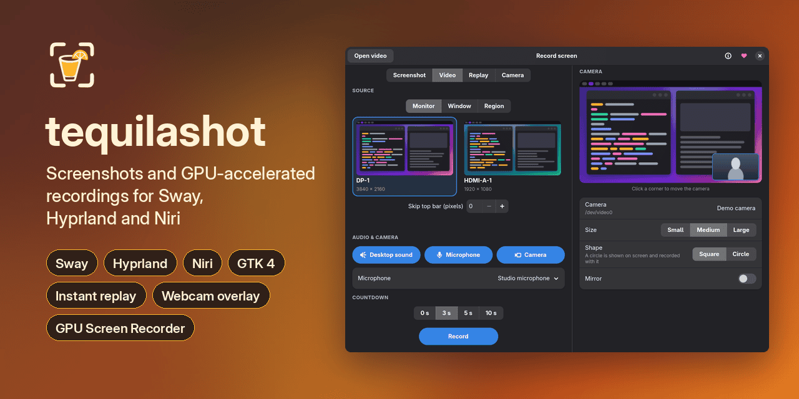
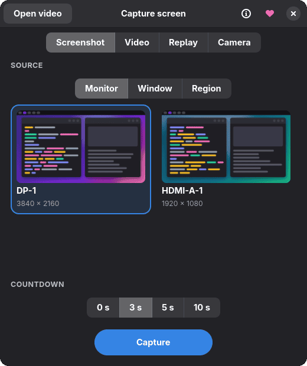
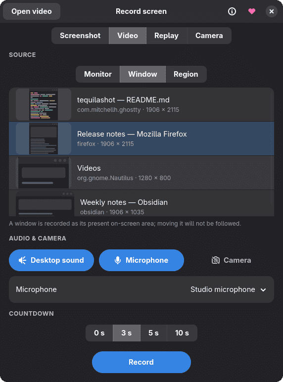
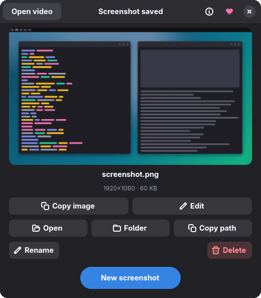
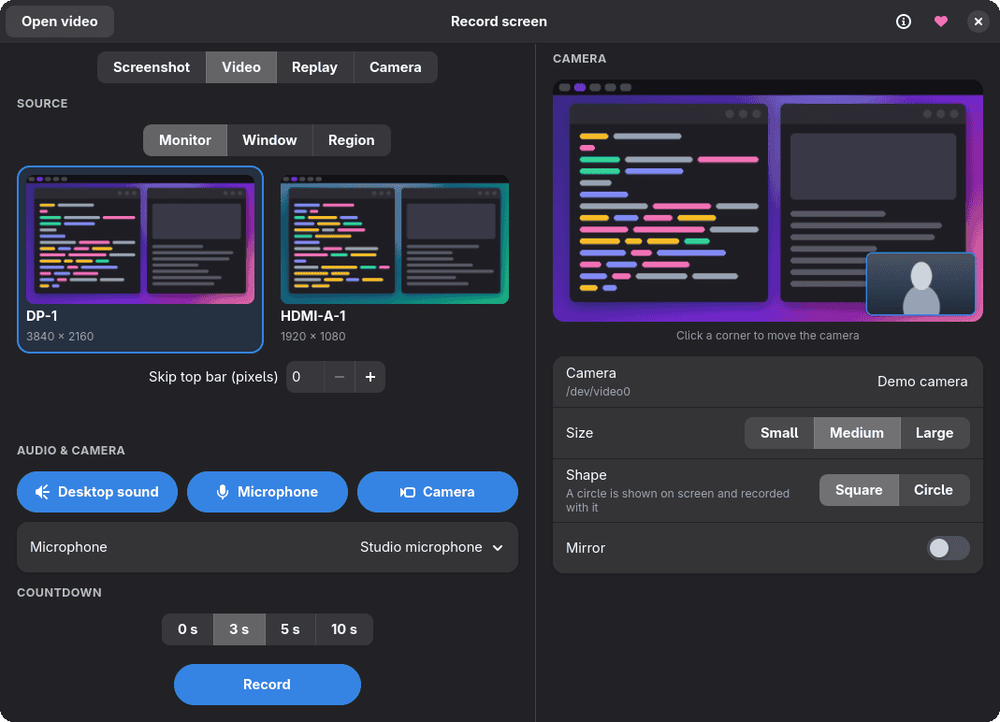
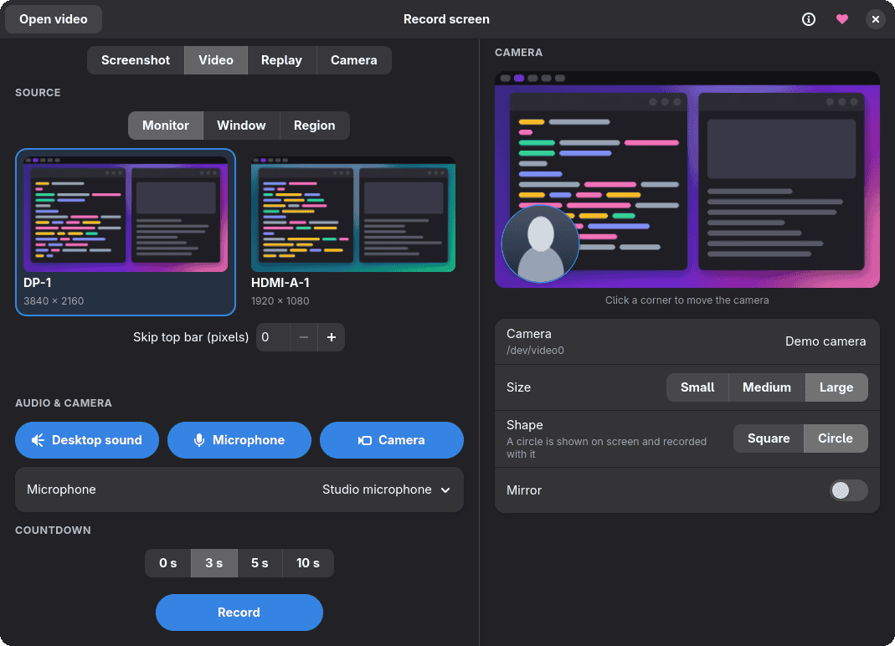
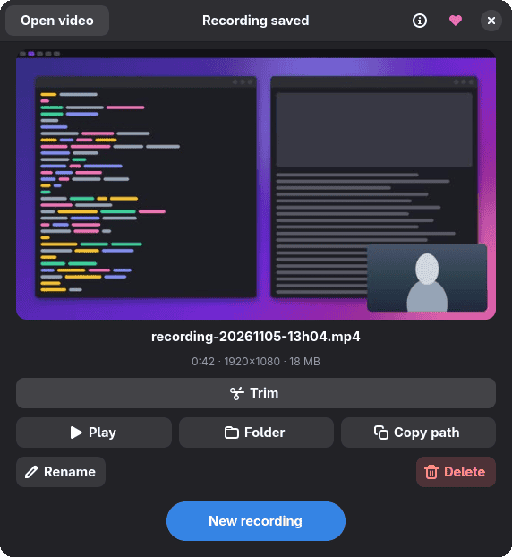
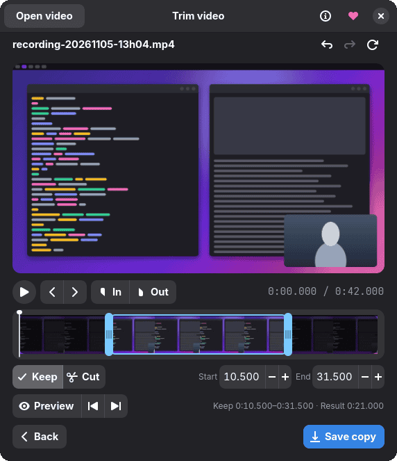

Screenshots, GPU-accelerated recordings and instant replay for Sway and Hyprland. Use the GTK4 dialogue or the command line.

Run tequilashot with no arguments to open the dialogue. It starts the daemon if needed and remembers your last settings. Enter captures, Escape closes.
A monitor, a window or a dragged-out region, to the clipboard or a file, with an optional AI-suggested file name.
GPU Screen Recorder encodes video on the graphics card, so the CPU stays free and high resolutions keep their frame rate.
Keep the last 30, 60 or 120 seconds of a monitor in memory and save a clip after the fact.
Your webcam in a draggable circle on screen, with optional background removal for the circle and the virtual camera.
Publish a monitor, window or region as a webcam that Google Meet and Chrome can select.
Trim a recording, or save a copy with hiss, hum and keyboard noise taken out of the speech.
Pick Screenshot in the dialogue, then a source: Monitor shows live thumbnails of each output, Window lists the open windows with their preview, application and size, and Region lets you drag out an area after pressing Capture. The countdown is 0, 3, 5 or 10 seconds, and the dialogue hides before capturing.


The result page previews the screenshot with its dimensions and file size. Copy the image or its path, open it in its folder, rename it, or move it to the bin.
Edit opens Satty and reloads the preview when you save.

Clipboard captures open a name-entry window before saving. If aichat is installed, it suggests a name while you type; see AI and local models.
Pick Video for a monitor, window or region. The dialogue hides during the recording; stop it by running tequilashot again, with tequilashot stop-recording, or by clicking the Waybar module.
Video mode adds desktop sound and a microphone, with a device picker for the microphone. The camera panel shows a live preview: place the camera on a corner, then choose its size, shape and mirroring. Monitor recordings can trim pixels from the top to hide a bar.

The Circle shape puts the webcam on screen as a round bubble with a white ring, above other windows, and the recording captures it from there. Drag it around, or run tequilashot camera cycle to move it clockwise between corners.
Remove background shows only you in the circle, and your surroundings become transparent. A person-segmentation model runs on the CPU, at roughly six frames a second, so expect a lower frame rate.

The result page previews the video with its size, length and resolution. Play it, show it in its folder, copy its path, rename it or move it to the bin.

Drag the timeline handles or type exact times. Keep saves the selection; Cut removes it and joins the remaining footage. The short previews play the first moments of a kept selection, the last moments before its end, or the join left by a cut.
Remove noise saves a copy with hiss, hum, fans and keyboard clatter taken out of the speech, using FFmpeg's arnndn filter and an RNNoise speech model. The picture and any other streams are copied as they are, so it is quick and costs no quality. The trimmer has a Remove noise toggle as well, which cleans the sound of the copy it saves.

# Record the screen with desktop sound and the microphone
tequilashot movie-screen --audio --mic
# Record the focused window with the round camera
tequilashot movie-current-window --camera --camera-shape circle
# Save recording-denoised.mp4 beside the original
tequilashot denoise recording.mp4Replay holds the previous 30, 60 or 120 seconds of a monitor in RAM, with optional desktop sound and microphone. Nothing is written to disk until you save, and you get whatever the buffer held at that moment, so save after the moment you wanted to keep.
# Buffer the focused monitor, including desktop sound
tequilashot replay-start --current-screen --seconds 60 --audio
# Save the buffer and print the clip's path
tequilashot replay-save
# Discard the remaining buffer
tequilashot replay-stopAt the default 20 Mbps H.264, footage takes about 2.5 MB per second, whatever the resolution or refresh rate.
| Buffer | Memory |
|---|---|
| 30 seconds | about 75 MB |
| 60 seconds (default) | about 150 MB |
| 120 seconds | about 300 MB |
Replay needs a GPU Screen Recorder build with -ipc support. It captures monitors only, and buffering does not resume after the daemon restarts.
The AI features run on your machine or through your own aichat setup, and the models are downloaded once, on your click, with their checksum verified. Nothing is fetched behind your back.
When a clipboard capture asks for a file name, tequilashot can send the picture to aichat and suggest one while you type. The model defaults to gemini:gemini-2.5-flash-image and follows whatever providers and keys you already configured in aichat. Turn it off and the plain name entry stays.
The round camera's Remove background runs the u2net_human_seg.onnx person-segmentation model (Apache-2.0) on your CPU through ONNX Runtime. It works in recordings and in the virtual camera, and the Download button in the dialogue fetches the model once.
Remove noise uses an RNNoise speech model from rnnoise-models, about 300 KB, with FFmpeg's arnndn filter. The first time, the dialogue offers the download; the checksum is verified before the model is used.
Models live in ~/.local/share/tequilashot/, and Preferences or environment variables can point elsewhere: TEQUILASHOT_AI_MODEL for the naming model, TEQUILASHOT_SEGMENTATION_MODEL and TEQUILASHOT_ONNXRUNTIME_LIB for background removal, TEQUILASHOT_DENOISE_MODEL for noise removal. The Advanced preferences page also has a mirror setting for the segmentation model, restricted to https://.
If the ONNX Runtime library or the segmentation model is missing, the round camera is hidden and an error is reported rather than showing your real background. A recording or virtual camera that is already running carries on without it.
GitHub Releases has an x86_64 archive plus deb and rpm packages. They need GTK 4 and libadwaita, and gtk4-layer-shell for the round camera.
# Arch Linux (AUR)
yay -S tequilashot-binYou need Go 1.25.6 or newer, a C toolchain, and the GTK 4 and libadwaita development files.
go install github.com/chmouel/tequilashot/cmd/tequilashot@main
# or a CLI-only build without GTK
CGO_ENABLED=0 go build -tags nogui -o bin/tequilashot ./cmd/tequilashot| Tool | Used for |
|---|---|
| grim | Capturing Wayland output |
| slurp | Selecting a region |
| gpu-screen-recorder | Video, audio and webcam input |
| wl-clipboard | Clipboard commands |
| FFmpeg | Camera previews, trimming and noise removal |
| aichat | AI-generated file names (optional) |
The recorder encodes on the GPU and does not fall back to the CPU, so hardware H.264 encoding has to work on the card the recorder selects. If a capture fails as soon as it starts, check that first.
Every command talks to the same daemon as the dialogue and starts it when needed.
# Screenshots
tequilashot selection-clipboard
tequilashot selection-file
tequilashot current-window-clipboard
# Recordings
tequilashot movie-screen --audio --mic
tequilashot movie-current-window --camera
tequilashot toggle-record -a movie-current-window -w 2
tequilashot stop-recording
# Virtual camera
tequilashot virtual-camera start --camera
# Noise removal
tequilashot denoise recording.mp4# Sway, ~/.config/sway/config
bindsym $mod+r exec tequilashot
bindsym Print exec tequilashot selection-clipboard
bindsym $mod+Shift+r exec tequilashot toggle-record -a movie-screen -w 2
-- Hyprland, hyprland.lua
hl.bind("SUPER + R", hl.dsp.exec_cmd("tequilashot"))
hl.bind("Print", hl.dsp.exec_cmd("tequilashot selection-clipboard"))"custom/recording": {
"exec": "tequilashot waybar-status --follow",
"on-click": "tequilashot toggle-record -a movie-current-window",
"return-type": "json"
}Completion for Bash, Zsh and Fish comes from tequilashot completion <shell>. The README covers preferences, environment variables, replay modules and the virtual camera setup.